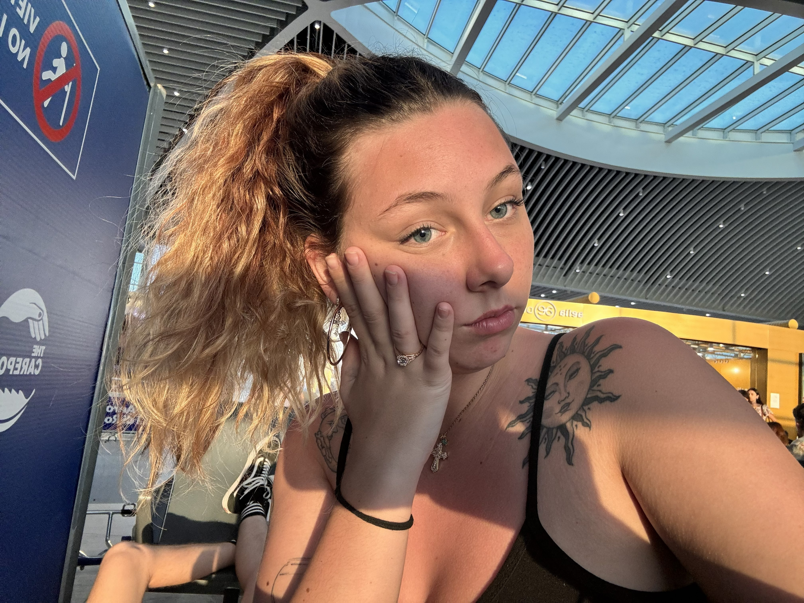
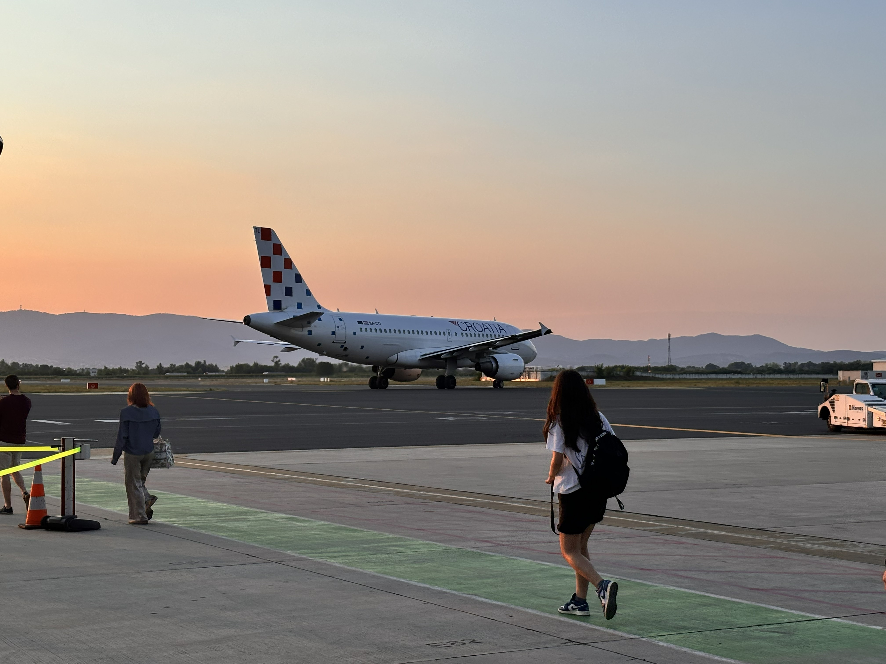

The quick snapshot
Stay details
Hotel / Airbnb
Link: Airbnb in Zagreb
Area: Zagreb
What I liked: The Airbnb was in a pretty central area, which made the city feel lively and fun right away. There was plenty of energy around us, and it was super easy to just head outside and see what we found. Maybe it's our love of Eastern European old towns, but Zagreb is definitely a place we want to return to with a bit more time.
Booking notes
- Price: $78.78
- Best part: Central location with lots going on around us
- Good fit for: A quick city stay where you want to be close to the action
- Overall: A solid little home base for a very fast-moving stop
Getting there
Travel: Flew in from Italy
Travel cost: $28.00
Rental car: None
Arrival notes: Getting in was easy, and our rides into the city were super cheap. We used Bolt, which I am a huge fan of. We had no issues and it was one of the smoother arrival days of the trip.
Recommendation: Yes. I would absolutely do this part the same way again.
Photo Gallery

Airport selfie to show off my new jewelry

Some of the beautiful scenery in the Croatian countryside

The photo doesn't do it justice, trust me

We ended the day with a beautiful sunset and another plane ride
Where we ate and what we ordered
A Morning Boulangerie Trip
Burgers in the Park
Burger Park Plitvice
Most memorable setting: After a rough ride and a bit of a crazy travel day, we really just wanted something quick and yummy. This place checked all of the boxes with a great view.
Would I do it again? While it was convenient, upon further research it seems that there are plenty of other places nearby with more variety and better reviews.
Our order: I got the Smokin' Cheese burger while Aiden got the Double Trouble. Both were served with a side of fries. I would rate the meal as a 6 overall. It wasn't anything special but it did get the job done.
What we did, day by day
Day 1
Date: July 15, 2024
Main plan: Arrive in Zagreb, get settled into the Airbnb, and spend time exploring the busy central area around us via Bolt.
Best part: The city had a fun little hustle to it, which made even casual wandering feel lively.
Worth repeating? Yes
Day 2
Date: July 16, 2024
Main plan: Take the bus out to Plitvice Lakes, see as much as we could, then make it back in time to catch our flight.
Best part: Even with only a short time there, the nature was still beautiful enough to make an impression. The round-trip bus ride itself was also such a cool part of the day.
Worth repeating? Yes — but with far better planning next time.
The Cherry on Top
After all of the planning we had done, and the realization of our travel fail, we decided not to trek into the forest so we would not risk missing our bus back to the airport. Said bus ended up being over an hour late (classic FlixBus) and gave us ample time to explore. If I could go back, we would have skipped the average burgers and simply enjoyed our time. Lessons learned!